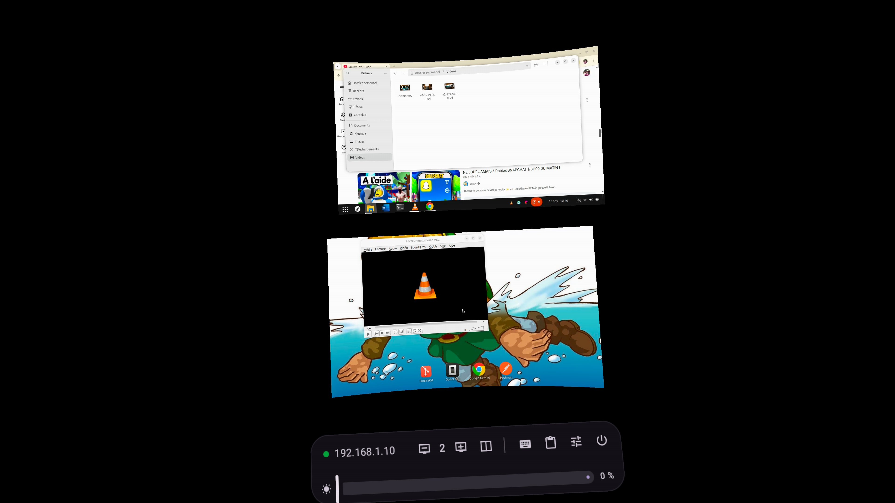
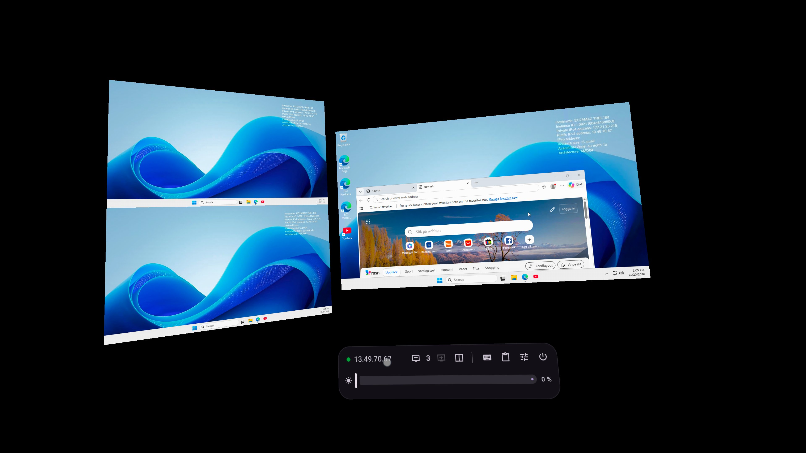
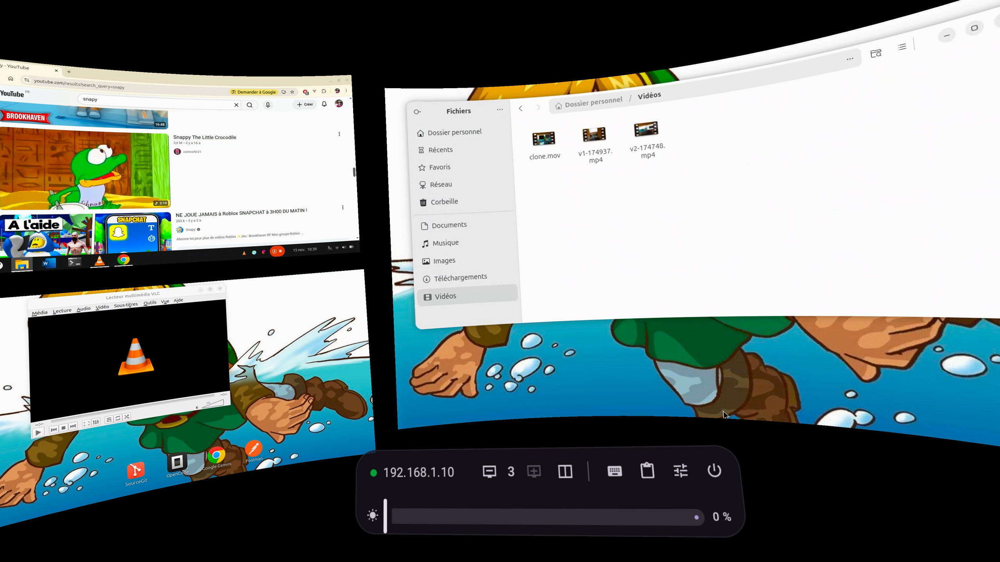

Bring your Windows or Linux desktop into Meta Quest over standard RDP, with responsive video, audio and passthrough. Tested with GNOME Remote Desktop and Windows Server 2025. Start with up to two flat screens for free; Ultra adds a third screen, curved panels and layouts.
Free download · Ultra unlocked inside the app · No account, no cloud
Why it feels native
Move, resize and recenter your desktop around you. Passthrough keeps your hands, keyboard and room visible. Rendering, input and connection handling are tuned for everyday work, not just a demo.
Resolution adapts to the number of screens, up to 1600×900 for one screen. Hardware H.264 decoding is used when the host supports it.
Your hands, keyboard and room stay visible around the desktop. Dim the room independently for focus; your brightness setting is remembered.
Filtering and dual-hand arbitration keep the cursor precise. Drag windows across screen seams in one gesture; resizing a panel does not move the remote cursor.
Use a Bluetooth keyboard or open the headset keyboard with A/X or the dock. Typed paste stays tied to its original session when you change connections.
Video presentation runs separately from network reads, so drawing a frame does not hold up incoming desktop audio. Playback still depends on your host and network.
An encrypted RDP connection straight to your PC. The server certificate is pinned on first use, like SSH.
Add or remove screens from the dock within your edition's limit. The app waits for the host's actual layout and explains when a reconnect is needed.
Copy text both ways, with exact text preserved by default. Paste waits for the server's acknowledgement; an optional setting handles affected GNOME Unicode escapes.
Free & Ultra
The free edition is a complete remote desktop with up to two flat screens. Ultra is a one-time purchase inside the app, and you can switch back to flat. The host determines the available screens.
Download at no cost
Price shown in the Store
In the headset
Ultra adds the stacked layout, curved panels and a third screen. The remote desktop stays a normal row of monitors; the panels are what you arrange in the room.



Screenshots show Linux and Windows desktops. See the compatibility table for tested hosts and their limits.
Windows & Linux
Standard RDP, with results tied to the server and mode actually tested. Free allows up to two screens and Ultra up to three; the host must provide the requested layout.
| RDP host | Screens at connection | Change screen count | Verification |
|---|---|---|---|
| GNOME Remote LoginUbuntu 26.04 | 1–3 | Without reconnecting | Tested on Quest 3 |
| GNOME Desktop Sharing | 1, imposed by the host | Not available in this mode | Tested on Quest 3 |
| Windows Server 2025Native RDP with NLA | 1–3 | Without reconnecting | Tested on Quest 3 |
| xrdp 0.9.24 / XorgUbuntu 24.04 + XFCE | 1–3, verified on the server | Reconnect needed in this setup | Initial layout verified; updated Quest flow still to validate |
| Windows 10/11Pro / Enterprise | Not yet tested here | Not yet tested here | RDP-capable; not yet validated |
GNOME Remote Login creates a remote session; Desktop Sharing mirrors an existing desktop. Automatic login can cause GNOME to reuse a single-screen local session. The xrdp result applies to the version above, not every xrdp server. Windows Home cannot host RDP.
Up and running
No sideloading and no Developer Mode. The app comes from the Meta Horizon Store.
Get ByteStudio Remote Desktop on your Quest from the Meta Horizon Store. It installs like any other app.
Windows: enable Remote Desktop in System settings on Server or a
Pro / Enterprise desktop edition.
GNOME: Settings → System → Remote Desktop (or Sharing on older versions).
Choose Remote Login for multiple screens, or Desktop Sharing for one.
Other Linux desktops need an RDP server such as xrdp. Note the host's IP address and RDP port.
Enter the host address, port and RDP credentials. The app shows startup progress and keeps the form visible until the first desktop image is ready. Then move, resize or recenter your panels.
Before you start
A slow desktop startup or screen-layout confirmation is shown as a wait, not treated as a failure. Notifications below the dock keep active waits and errors visible, with Details for longer diagnostics. You can keep working while a layout request is pending, or choose Connection → Reconnect after the interruption warning.
Questions
Yes. The free edition is a complete remote desktop with up to two flat screens, subject to host support. Ultra is a one-time purchase made inside the app, with no subscription.
A third screen, curved panels and layout presets. You can switch between flat and curved in the app settings; the choice is remembered and applied on the next launch.
Install the free app, open the connection form and use the Ultra card. The purchase is handled by the Meta Horizon Store and stays attached to your Meta account.
No. The app is distributed through the Meta Horizon Store and installs like any other Quest app.
Yes. Windows Server 2025 has been tested on Quest 3 with one to three screens and screen-count changes without reconnecting. Windows 10/11 Pro or Enterprise can host RDP, but these desktop editions have not yet been tested here. Windows Home cannot host RDP. See the compatibility table for the scope of testing.
GNOME Remote Desktop on Ubuntu is the reference setup tested on Quest 3. Remote Login supports multiple screens; Desktop Sharing mirrors one screen. xrdp 0.9.24 with Xorg has been verified with one to three screens at connection, but changing the screen count requires a reconnect in the tested setup. Initial multi-screen support does not require live Display Control. Other servers and versions are not automatically covered by these tests.
Use the minus and plus controls in the dock, within your edition's limit. GNOME Remote Login and Windows Server 2025 have been tested with live changes. A slow confirmation keeps the desktop usable; waiting alone does not trigger a reconnect. If the change is unavailable or interrupts the connection, the app explains the fallback and reconnects once with the requested screen count. You can also choose Connection → Reconnect, with a warning that it interrupts the session.
Signing in and showing the first desktop image are separate steps. GNOME Remote Login can take around ten seconds to start a session. The connection form stays visible until an actual image has been presented, rather than exposing a blank panel. Waiting messages, errors and reconnect notices appear below the dock; use Details for longer diagnostics.
Text is preserved exactly by default, including literal escapes in code and JSON. Some GNOME server versions escape accented characters. For an affected host, open Compatibility and enable Decode clipboard Unicode escapes; the choice is remembered for that address and port. It applies only to text received from the server and can alter literal escapes, so leave it off on unaffected hosts. It does not repair the headset-to-server direction; that needs a server-side fix. Clipboard sharing is text only.
The connection goes straight from the headset to your PC. There is no account and no cloud relay. The server certificate is pinned on first use, and the connection credentials stay on the headset, encrypted.
Yes. Ultra includes a switch between curved and flat panels. Nothing is locked in one shape.
Install the free app on your Quest, connect to your PC, and unlock Ultra when you want more screens.
Get it on Meta Horizon Store